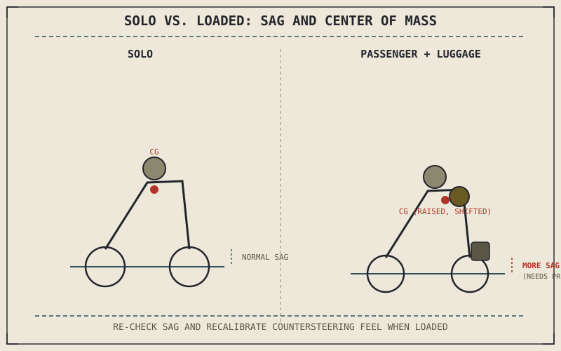

Chapter 5.10 already established that a touring bike's laden weight changes so much between riding solo and riding two-up with bags that suspension set up correctly empty can be badly wrong once loaded. Every technique this part has covered so far was learned, consciously or not, against a particular combined mass and center of gravity — adding a passenger or a significant load changes both, and several of this part's techniques need deliberate re-calibration as a result.
Chapter 9.15 closed by naming passenger and load carrying as this chapter's subject, directly changing the mass and handling this book has assumed throughout. This chapter covers it.
Sag Changes, and Suspension Should Change With It
Chapter 5.4 established sag as the measurement of how much a loaded motorcycle compresses its suspension under its own weight, and Chapter 5.10 flagged laden sag as changing significantly with a passenger and luggage. Re-checking and adjusting preload for two-up or loaded riding, using the same sag procedure Chapter 5.4 described, restores the suspension's intended working range rather than leaving it sitting deeper in its travel than designed — a motorcycle loaded without this adjustment reaches full compression, and the harsh bottoming Chapter 5.4 warned against, considerably sooner than the same suspension would empty.
Combined Center of Mass Shifts, Changing Countersteering Feel
Chapter 9.1 and Chapter 9.7 established that a rider's own body position measurably shifts the combined center of mass Chapter 8.3's lean-angle math depends on; a passenger adds a second body whose position and movement do the same thing, generally raising the combined center of mass and adding mass a rider's own body position can no longer fully control through hanging off alone. Chapter 8.4's quantified relationship between required lean angle and speed-and-radius still holds, but the countersteering input needed to reach that same lean angle changes with the added mass and altered mass distribution, meaning a rider's well-practiced solo countersteering feel needs conscious recalibration rather than assuming it transfers unchanged.
Adding a passenger doesn't just add weight — it adds a second, independently moving mass to the combined center of gravity every lean-angle and countersteering calculation in this book depends on, which is exactly why solo riding feel doesn't automatically transfer to riding two-up.

A motorcycle shown solo versus loaded with a passenger and luggage, with sag measurements compared before and after preload adjustment, and the combined center of mass shown raised and shifted rearward with the added load.
Braking Distance Grows With Combined Mass
Chapter 7.5's weight-transfer physics and the friction circle Chapter 6.4 established both still apply exactly the same way with a passenger and load aboard, but the combined mass being decelerated is now genuinely larger, meaning the actual stopping distance from Chapter 9.4's threshold braking technique is longer for the same brake input, even though the friction circle at each tyre hasn't necessarily shrunk the way it does in the rain. Following distance from Chapter 9.9 should be recalculated the same way Chapter 9.10 recalculated it for highway speed, this time against the loaded motorcycle's actual, longer stopping distance rather than the solo figure a rider may be used to.
A Common Misconception, Cleared Up Early
It's a common assumption that carrying a passenger or load mainly affects acceleration and top speed, since the extra weight is most noticeable when pulling away or climbing a grade. Suspension sag, cornering lean-angle feel, and braking distance are all measurably affected too, in ways this chapter has traced directly back to specific physics established earlier in this book — treating loaded riding as "the same bike, just a bit slower" undersells how many of this book's earlier calculations actually shift with the added mass.
Where This Leads
This part has now covered how an individual rider handles a motorcycle across environments, with others, and loaded. Chapter 9.17 closes this part by placing all of these techniques back into the whole system this book has built, one chapter at a time, since Part I.
Key Concepts to Remember
- Sag should be re-checked and preload adjusted for a passenger or load, restoring the suspension's intended working range rather than leaving it deeper in its travel.
- A passenger adds an independently moving mass to the combined center of gravity, changing countersteering feel even though the required lean-angle relationship stays the same.
- Braking distance grows with the loaded motorcycle's larger combined mass, requiring following distance to be recalculated rather than carried over from solo riding.
Cross-References
| ← Ch. 5.4 | Established sag measurement and its relationship to suspension travel; this chapter shows re-checking sag as the direct response to a passenger or load. |
| ← Ch. 8.3 | Established the combined center of mass in the lean-angle relationship; this chapter shows a passenger's own mass and movement altering that combination. |
| ← Ch. 9.9 | Established following distance sized to stopping distance; this chapter shows that distance needing recalculation for a loaded motorcycle's greater mass. |
| → Ch. 9.17 | Closes Part IX by placing all of this part's riding technique back into the whole system this book has built. |